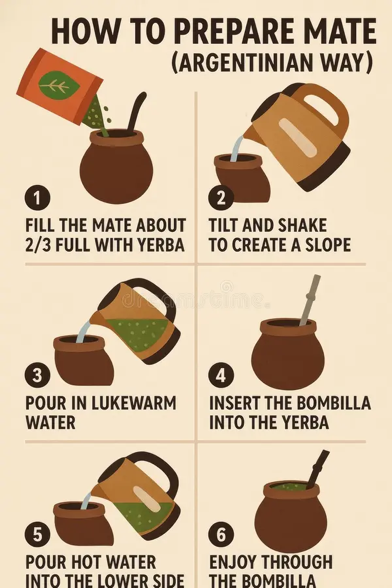
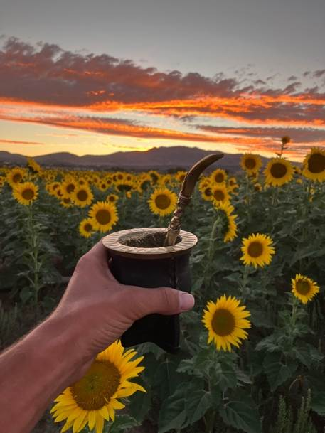

What is Yerba Mate?

What is Yerba Mate? Yerba mate is a traditional South American drink made by steeping the dried leaves of the Ilex paraguariensis plant in hot water. It was first consumed by the Indigenous Guaraní people, who valued it for its energizing and medicinal properties. When Spanish colonists arrived in the 1500s, they adopted the drink, helping spread it throughout Argentina, Uruguay, Paraguay, and southern Brazil. Today, yerba mate is deeply tied to social culture. It’s usually prepared in a hollow gourd called a mate and sipped through a metal straw called a bombilla. Friends often share the same gourd, passing it around while talking and relaxing together. With its bold, earthy flavor and smooth caffeine boost, yerba mate offers more than just energy—it’s a centuries-old tradition that brings people together.
Our Purpose: Our mission is to introduce people to the world of yerba mate by providing clear reviews, helpful information, and honest comparisons. We aim to make it easier for beginners and enthusiasts alike to explore different varieties, understand their flavors, and decide which mates they enjoy most while discovering the culture behind this unique drink.
